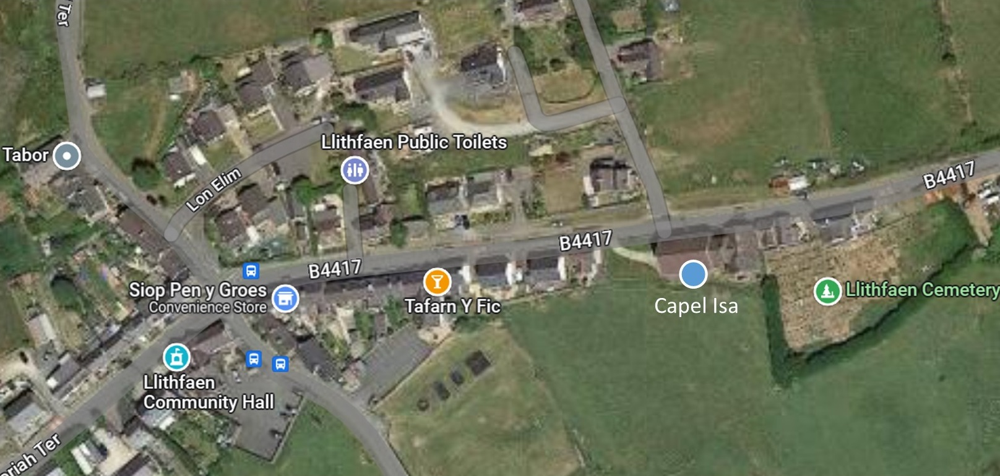

Capel M.C.
Llithfaen

La chapelle méthodiste calviniste de Llithfaen est enregistrée en tant que bâtiment classé Grade II *. La chapelle actuelle, connue localement sous le nom de Capel Isaf,
 La galerie de la chapelle est particulière car elle se trouve sur les quatre côtés du bâtiment.
est la cinquième chapelle à être construite dans le village pour la communauté méthodiste. Il a été érigé en 1905 par Griffith Jones, Morfa Nefyn, suivant les plans d'Owen Morris Roberts, Porthmadog. L'intérieur de la chapelle principale est conçu pour accueillir environ 700 personnes. Le toit en plâtre est en sections moulurées et en grands cercles concentriques. Les murs sont enduits et peints comme de la pierre. Le bois utilisé est le pin. Une galerie de 5 rangées de sièges est soutenue par des colonnes en tôle ondulée. La façade de la galerie est ornée et sculptée, et elle est frappante en raison de ses coins incurvés sur les quatre côtés, sans parler de l'espace dédié au chœur d'hommes alors local du côté est. Il y a une galerie inférieure derrière la chaire, abritant l'orgue. En 1999, il a été décrit comme une grande chapelle bien conservée avec son impressionnant intérieur soigneusement conçu, construit comme un centre religieux et social pour la communauté locale à une époque où l'industrie des carrières était à son apogée dans la région.
La galerie de la chapelle est particulière car elle se trouve sur les quatre côtés du bâtiment.
est la cinquième chapelle à être construite dans le village pour la communauté méthodiste. Il a été érigé en 1905 par Griffith Jones, Morfa Nefyn, suivant les plans d'Owen Morris Roberts, Porthmadog. L'intérieur de la chapelle principale est conçu pour accueillir environ 700 personnes. Le toit en plâtre est en sections moulurées et en grands cercles concentriques. Les murs sont enduits et peints comme de la pierre. Le bois utilisé est le pin. Une galerie de 5 rangées de sièges est soutenue par des colonnes en tôle ondulée. La façade de la galerie est ornée et sculptée, et elle est frappante en raison de ses coins incurvés sur les quatre côtés, sans parler de l'espace dédié au chœur d'hommes alors local du côté est. Il y a une galerie inférieure derrière la chaire, abritant l'orgue. En 1999, il a été décrit comme une grande chapelle bien conservée avec son impressionnant intérieur soigneusement conçu, construit comme un centre religieux et social pour la communauté locale à une époque où l'industrie des carrières était à son apogée dans la région.
La chapelle a coûté 3081 £, 8 shillings et 2 pence à construire. Le premier service public a été tenu par Evan Roberts, le revivaliste, le 12 décembre 1905. Le révérend E. Sidney Morris a dirigé les prières et lu la Bible. Cela s'est produit, même si la chapelle n'était pas tout à fait terminée à l'époque. Les peintres n'avaient pas fini leur travail. Ils prêchèrent dans la nouvelle chapelle le 1er avril 1906 et le premier mariage fut célébré le 15 août.
 Photo de la chapelle au début du siècle dernier.
Photo de la chapelle au début du siècle dernier.
Hafod Ceiri est une société créée pour développer Capel Isaf, Llithfaen en un centre polyvalent pour Llithfaen et l'ensemble de la population locale. Nous avons signé un bail pour le bâtiment pour les 99 prochaines années. Hafod Ceiri en tant qu'entreprise visant à maintenir vivant le patrimoine unique de la région et à soutenir un large éventail de personnes, en aidant à leur faire découvrir leur patrimoine à travers des activités et des événements éducatifs et participatifs ; développer la confiance de la communauté et encourager l'entreprise et promouvoir l'emploi dans la région, ainsi que la sécurisation d'un lieu de culte pour le village de Llithfaen et la préservation d'un bâtiment unique.
Le comité de régénération de Llithfaen s'est réuni en 2012 dans le but de stimuler le développement communautaire dans et autour de Llithfaen. Le comité a été formé avec un certain nombre de personnes actives dans le village avec le soutien du conseil communautaire, des anciens de la chapelle et de ses membres et groupes locaux. En 2013, un soutien financier a été reçu de la zone de beauté naturelle de Llŷn et de Mantell Gwynedd. Des travaux ont été commandés pour identifier les priorités de la communauté et pour étudier les opportunités offertes dans la région, en examinant plusieurs sites du village. L'un de ces bâtiments était Capel Isaf, et ils ont élaboré des recommandations et mené une étude de faisabilité, en vue de développer le bâtiment. Ce fut le début de Hafod Ceiri en tant qu'entreprise.
Plan indiquant l'emplacement de la chapelle dans le village.